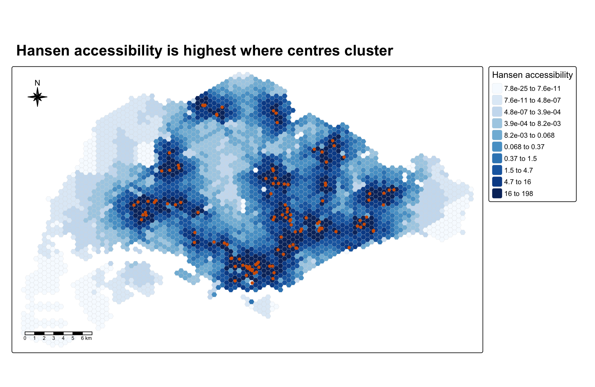
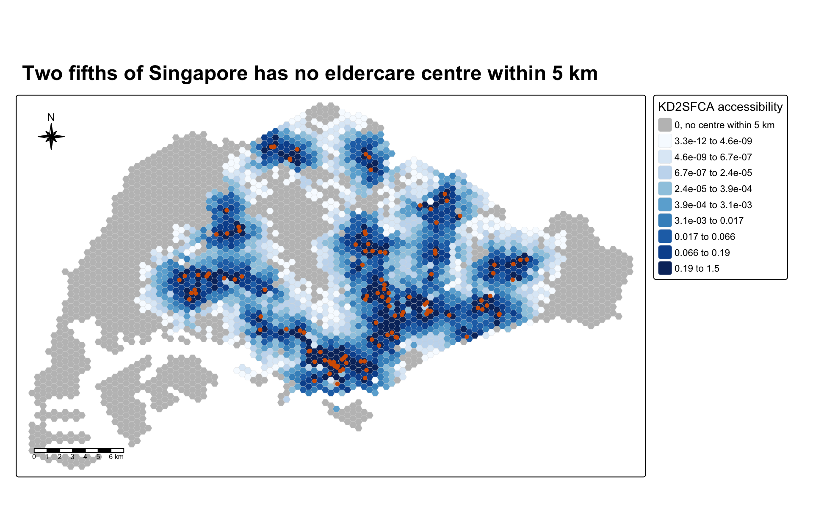
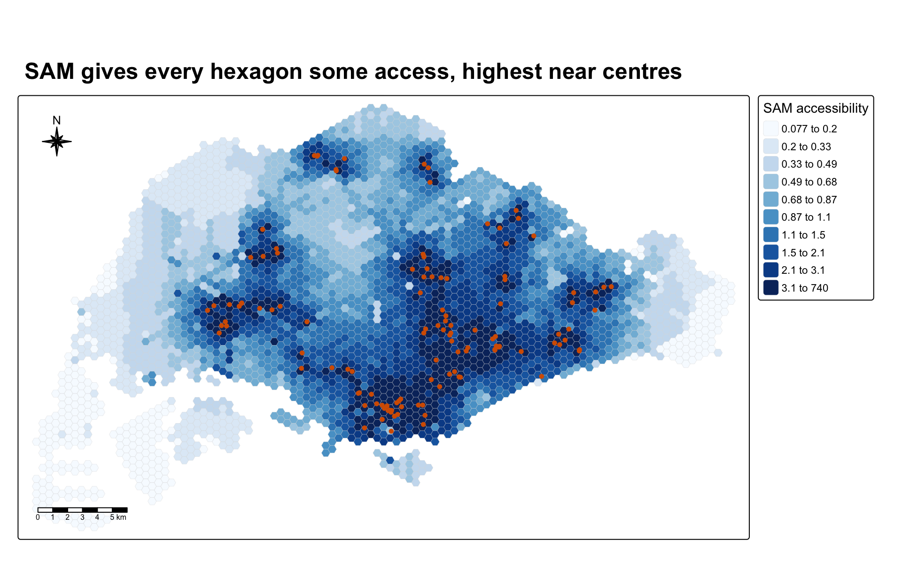
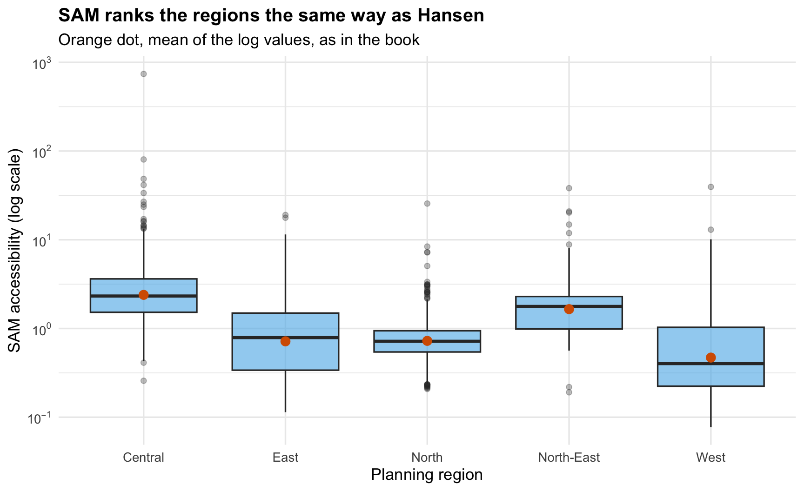
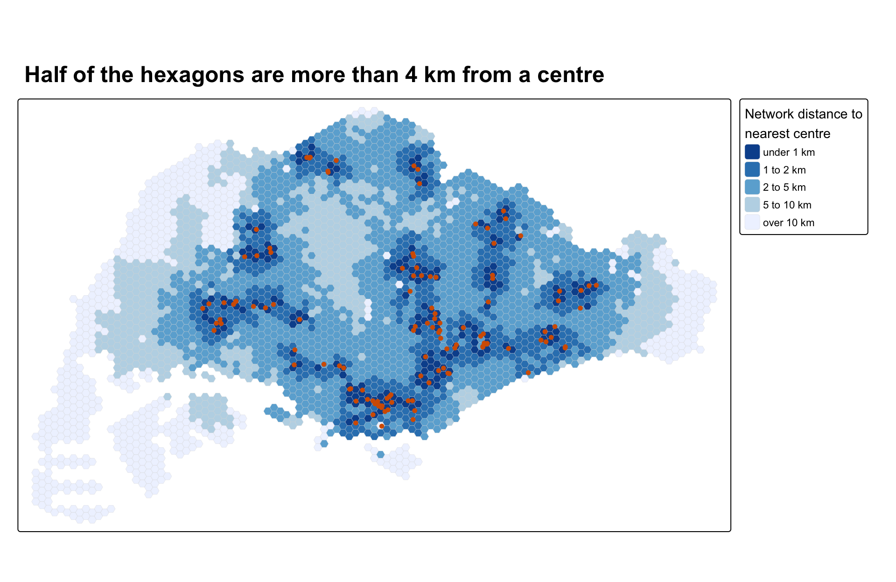
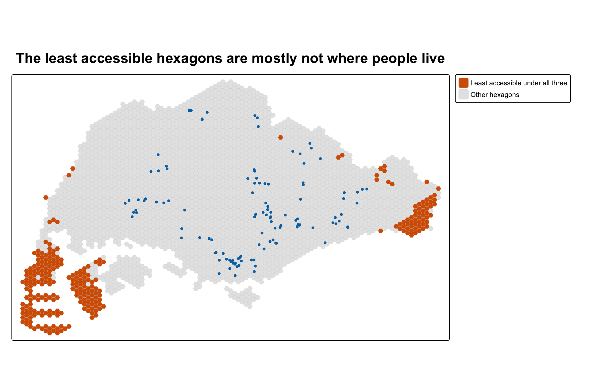

pacman::p_load(tmap, SpatialAcc, sf,
ggstatsplot, reshape2,
tidyverse, knitr)Hands-on Exercise 7
Modelling Geographical Accessibility
3,125 hexagons covering Singapore, 120 eldercare centres MP14_SUBZONE_NO_SEA_PL, hexagons, ELDERCARE shapefiles, OD_Matrix.csv sf SpatialAcc tmap ggstatsplot reshape2 tidyverse
1 Overview
This exercise follows chapter 17 of the book and Lesson 7. Accessibility measures how easily people in one place can reach a service. Here the service is eldercare, and the places are 3,125 hexagons with a 250 m radius covering Singapore. The distance from every hexagon to every eldercare centre is a road network distance prepared by Prof. Kam.
I compute three accessibility measures from the lesson, the Hansen potential model, the Kernel Density Two-Step Floating Catchment Area (KD2SFCA) and the Spatial Accessibility Measure (SAM). Each one adds up the supply that a hexagon can reach and discounts centres that are further away. They differ in how they discount distance and whether they account for competition from other hexagons.
2 Loading the Packages
SpatialAcc is the new package. Its ac() function computes all three measures. sf, tmap and tidyverse do the same jobs as before. ggstatsplot and reshape2 are in the book’s list, and I add knitr for tables.
3 Geospatial Data Wrangling
3.1 Importing the Geospatial Data
st_read() of sf reads the three shapefiles, the subzone boundaries without the sea, the hexagons and the eldercare centres.
mpsz <- st_read(dsn = "data/geospatial", layer = "MP14_SUBZONE_NO_SEA_PL")Reading layer `MP14_SUBZONE_NO_SEA_PL' from data source
`/Users/czxtom/Documents/Programming/GAA/ISSS626-GAA/Hands-on_Ex/Hands-on_Ex07/data/geospatial'
using driver `ESRI Shapefile'
Simple feature collection with 323 features and 15 fields
Geometry type: MULTIPOLYGON
Dimension: XY
Bounding box: xmin: 2667.538 ymin: 15748.72 xmax: 56396.44 ymax: 50256.33
Projected CRS: SVY21hexagons <- st_read(dsn = "data/geospatial", layer = "hexagons")Reading layer `hexagons' from data source
`/Users/czxtom/Documents/Programming/GAA/ISSS626-GAA/Hands-on_Ex/Hands-on_Ex07/data/geospatial'
using driver `ESRI Shapefile'
Simple feature collection with 3125 features and 6 fields
Geometry type: POLYGON
Dimension: XY
Bounding box: xmin: 2667.538 ymin: 21506.33 xmax: 50010.26 ymax: 50256.33
Projected CRS: SVY21 / Singapore TMeldercare <- st_read(dsn = "data/geospatial", layer = "ELDERCARE")Reading layer `ELDERCARE' from data source
`/Users/czxtom/Documents/Programming/GAA/ISSS626-GAA/Hands-on_Ex/Hands-on_Ex07/data/geospatial'
using driver `ESRI Shapefile'
Simple feature collection with 120 features and 19 fields
Geometry type: POINT
Dimension: XY
Bounding box: xmin: 14481.92 ymin: 28218.43 xmax: 41665.14 ymax: 46804.9
Projected CRS: SVY21 / Singapore TMThere are 3,125 hexagons and 120 eldercare centres.
3.2 Updating the CRS Information
st_transform() sets all three layers to SVY21, EPSG 3414. The subzones come with an SVY21 projection but no EPSG code.
mpsz <- st_transform(mpsz, 3414)
eldercare <- st_transform(eldercare, 3414)
hexagons <- st_transform(hexagons, 3414)
st_crs(mpsz)$epsg[1] 34143.3 Cleaning the Attribute Fields
select() of dplyr keeps only the id and address of each centre, and mutate() adds a capacity of 100. Each hexagon gets a demand of 100.
eldercare <- eldercare %>%
select(fid, ADDRESSPOS) %>%
mutate(capacity = 100)
hexagons <- hexagons %>%
select(fid) %>%
mutate(demand = 100)
NoteLearning diary
The book uses the same demand for every hexagon and the same capacity for every centre, only to learn the method. That is a big simplification. A hexagon of HDB blocks and a hexagon of Tuas industrial land both count as 100 people. I come back to what this does to the results in Where the Three Measures Agree.
4 Aspatial Data Handling and Wrangling
4.1 Importing the Distance Matrix
read_csv() of readr reads the origin-destination (OD) matrix. Each row is one hexagon to one centre.
ODMatrix <- read_csv("data/aspatial/OD_Matrix.csv", skip = 0)
glimpse(ODMatrix)Rows: 375,000
Columns: 6
$ origin_id <dbl> 1, 1, 1, 1, 1, 1, 1, 1, 1, 1, 1, 1, 1, 1, 1, 1, 1, 1, 1…
$ destination_id <dbl> 1, 2, 3, 4, 5, 6, 8, 9, 10, 11, 12, 13, 14, 15, 16, 18,…
$ entry_cost <dbl> 667.9336, 667.9336, 667.9336, 667.9336, 667.9336, 667.9…
$ network_cost <dbl> 19846.87, 45026.76, 17644.17, 36009.56, 31068.09, 31194…
$ exit_cost <dbl> 47.64874, 31.87162, 173.47882, 92.19676, 64.62840, 117.…
$ total_cost <dbl> 20562.45, 45726.57, 18485.58, 36769.69, 31800.65, 31979…There are 375,000 rows, one for each of the 3,125 × 120 pairs. total_cost is the walk from the hexagon to the nearest road (entry_cost), plus the road distance (network_cost), plus the walk from the road to the centre (exit_cost), all in metres.
4.2 Tidying the Distance Matrix
The OD table is in long format, but ac() needs a matrix with one row per hexagon and one column per centre. pivot_wider() of tidyr spreads it out.
distmat <- ODMatrix %>%
select(origin_id, destination_id, total_cost) %>%
pivot_wider(names_from = destination_id,
values_from = total_cost) %>%
arrange(origin_id) %>%
select(-origin_id)
distmat_km <- as.matrix(distmat / 1000)
dim(distmat_km)[1] 3125 120The distances are divided by 1,000 so they are in kilometres.
CautionWhere I differ from the book
The book uses spread() and adds a note that pivot_wider() replaces it, so I use pivot_wider() directly. spread() sorts the rows and columns by id automatically, but pivot_wider() keeps the order they first appear in, so I add arrange(origin_id) to be safe.
ImportantCheck that caught something
ac() matches the matrix to the hexagons and centres by position, not by id. So row i must be hexagon i and column j must be centre j. The centre ids are not simply 1 to 120. They run from 1 to 133 with 13 gaps, so this is easy to get wrong. I check both orders.
c(rows_match = all(hexagons$fid == sort(unique(ODMatrix$origin_id))),
columns_match = all(as.character(eldercare$fid) == colnames(distmat_km))) rows_match columns_match
TRUE TRUE Both are TRUE, so the matrix lines up. It matters less here, because every centre has the same capacity, but with real capacities a mismatch would give each centre the wrong supply.
5 Modelling and Visualising Accessibility using the Hansen Method
5.1 Computing Hansen’s Accessibility
ac() of SpatialAcc computes the accessibility of every hexagon. It takes the demand, the capacity, the distance matrix, the decay setting power, and the method family. data.frame() stores the result, colnames() gives it a short name, and bind_cols() attaches it to the hexagons.
acc_Hansen <- data.frame(ac(hexagons$demand,
eldercare$capacity,
distmat_km,
power = 2,
family = "Hansen"))
colnames(acc_Hansen) <- "accHansen"
acc_Hansen <- as_tibble(acc_Hansen)
hexagon_Hansen <- bind_cols(hexagons, acc_Hansen)
NoteLearning diary
The lesson gives two distance decay functions, inverse power, α/d^β, and exponential, αe^(−βd). I read the source code of ac() to see which each family uses, since the help page does not say.
| Family | What ac() computes for hexagon i |
Decay |
|---|---|---|
| Hansen | Sum over centres of capacity × exp(-power * d) |
Exponential, β = power per km |
| KD2SFCA | Centres within d0 km only, each capacity shared among the hexagons that can reach it, with weight exp(-d^power) |
Gaussian-like kernel, cut off at d0 |
| SAM | Sum over centres of capacity ÷ (demand × d^power) |
Inverse power |
So power = 2 means three different things. For Hansen it is a decay rate of 2 per km, for KD2SFCA it squares the distance in the kernel, and for SAM it is the classic inverse square. The book also comments out d0 for Hansen, which is right, since Hansen has no cut-off.
ImportantCheck that caught something
Reading the source also showed how Hansen applies the capacities. It computes n * exp(-power * D), where n has one value per centre and D has one row per hexagon. R fills a matrix column by column, so the capacities are recycled down each column instead of across it, and a hexagon gets the capacity of the wrong centre. I test this with made up unequal capacities against a manual matrix product, and run the same test on SAM.
set.seed(626)
test_cap <- sample(c(50, 100, 200), nrow(eldercare), replace = TRUE)
hansen_pkg <- ac(hexagons$demand, test_cap, distmat_km,
power = 2, family = "Hansen")
hansen_manual <- as.vector(exp(-2 * distmat_km) %*% test_cap)
sam_pkg <- ac(hexagons$demand, test_cap, distmat_km,
power = 2, family = "SAM")
sam_manual <- as.vector(distmat_km^-2 %*% test_cap) / hexagons$demand
c(hansen_max_relative_error = max(abs(hansen_pkg - hansen_manual) / hansen_manual),
sam_max_relative_error = max(abs(sam_pkg - sam_manual) / sam_manual))hansen_max_relative_error sam_max_relative_error
2.761692e+00 3.562826e-15 all.equal(acc_Hansen$accHansen,
as.vector(exp(-2 * distmat_km) %*% eldercare$capacity))[1] TRUEWith unequal capacities the package’s Hansen value is off by up to 276 percent for some hexagons, and 14 percent of hexagons land in a different decile. SAM matches the manual result exactly. With every capacity set to 100, as in the book, the error cannot show, and the all.equal() check shows the book’s Hansen result equals the manual one. With real capacities I would compute Hansen with the matrix product instead of ac().
5.2 Visualising Hansen’s Accessibility
st_bbox() takes the extent of the hexagons, so all maps share the same frame.
mapex <- st_bbox(hexagons)tm_shape() and tm_polygons() of tmap colour the hexagons in ten quantile classes, and tm_dots() adds the centres.

fmt_num <- function(v) {
sapply(v, function(z) {
if (z == 0) "0"
else if (abs(z) < 0.01 || abs(z) >= 1000) formatC(z, format = "e", digits = 1)
else if (abs(z) >= 100) format(round(z))
else formatC(signif(z, 2), format = "fg", digits = 2)
}) %>% trimws()
}
acc_map <- function(data, var, title, legend_title, zero_label = NULL) {
x <- data[[var]]
if (is.null(zero_label)) {
q <- quantile(x, probs = seq(0, 1, length.out = 11))
breaks <- c(q[1:10], Inf)
labels <- paste(fmt_num(q[1:10]), "to", fmt_num(q[2:11]))
fills <- "brewer.blues"
} else {
q <- quantile(x[x > 0], probs = seq(0, 1, length.out = 10))
breaks <- c(0, q[1:9], Inf)
labels <- c(zero_label, paste(fmt_num(q[1:9]), "to", fmt_num(q[2:10])))
fills <- c("grey75", RColorBrewer::brewer.pal(9, "Blues"))
}
tm_shape(data, bbox = mapex) +
tm_polygons(fill = var,
fill.scale = tm_scale_intervals(breaks = unname(breaks),
labels = labels,
values = fills),
fill.legend = tm_legend(title = legend_title,
position = tm_pos_out("right", "center")),
col = "grey85", lwd = 0.2) +
tm_shape(eldercare) +
tm_dots(size = 0.3, fill = "#D55E00", col = "black") +
tm_title(title, size = 1.5, fontface = "bold") +
tm_compass(type = "8star", size = 2,
position = c("left", "top")) +
tm_scalebar(position = c("left", "bottom"))
}
acc_map(hexagon_Hansen, "accHansen",
"Hansen accessibility is highest where centres cluster",
"Hansen accessibility")The darkest hexagons sit around each cluster of centres, in the city centre and in the housing towns around the island. The far west, including Tuas and the Western Water Catchment, is in the lowest classes. Hansen values range from almost zero to 197.7, because the exponential decay falls off fast. A centre 1 km away counts for e^(−2), about 14 percent, and one 3 km away for under 1 percent.
CautionWhere I differ from the book
I put the legend outside the map and drew the centres in orange instead of red, so they stand out against the blue scale. I still use ten quantile classes, but I compute the breaks myself with quantile() and label them with two significant figures. tmap’s own labels printed up to ten decimal places, and the lowest class read “0.0000000000 - -0.0000000000”, because Hansen values go down to about 10-24. I left out the book’s tm_grid(), since it uses the old v3 alpha argument and the grid lines make the small hexagons harder to read. The book’s ten quantile classes in blue, the compass and the scale bar are kept.
5.3 Comparing Hansen’s Accessibility by Region
To compare the five URA planning regions, each hexagon needs a region. The book adds it with st_join() and join = st_intersects.
ImportantCheck that caught something
A hexagon that crosses a subzone boundary intersects two or more subzones, and st_intersects returns one row for each. I count how many rows the book’s join produces.
book_join <- st_join(hexagon_Hansen, mpsz, join = st_intersects)
largest_join <- st_join(hexagon_Hansen, mpsz["REGION_N"], largest = TRUE)
c(hexagons = nrow(hexagon_Hansen),
rows_after_join = nrow(book_join),
hexagons_repeated = sum(table(book_join$fid) > 1),
most_copies = max(table(book_join$fid))) hexagons rows_after_join hexagons_repeated most_copies
3125 5406 1522 8 The join turns 3,125 hexagons into 5,406 rows. 1,522 hexagons appear more than once, some up to 8 times. Small subzones in the city centre have many boundaries, so central hexagons are duplicated most. That pulls the regional summaries towards them. For the Central Region, the median Hansen value is 4.69 with the duplicates and 2.47 without them.
largest = TRUE keeps only the subzone that covers most of each hexagon, so every hexagon appears once. I use it for all three measures.
hexagon_Hansen <- st_join(hexagon_Hansen, mpsz["REGION_N"],
join = st_intersects, largest = TRUE)
count(st_drop_geometry(hexagon_Hansen), REGION_N) REGION_N n
1 CENTRAL REGION 605
2 EAST REGION 498
3 NORTH REGION 622
4 NORTH-EAST REGION 321
5 WEST REGION 1079geom_boxplot() of ggplot2 shows the distribution in each region, and stat_summary() adds the mean. Hansen values span many orders of magnitude, so the book plots their log. I use a log10 axis, which does the same but shows the real values as powers of 10.

region_box <- function(data, var, title, ylab) {
ggplot(data, aes(x = str_to_title(str_remove(REGION_N, " REGION")),
y = .data[[var]])) +
geom_boxplot(fill = "#56B4E9", alpha = 0.6, outlier.alpha = 0.3) +
stat_summary(fun = mean, geom = "point", colour = "#D55E00", size = 3) +
scale_y_log10(labels = scales::label_log()) +
labs(x = "Planning region", y = ylab, title = title,
subtitle = "Orange dot, mean of the log values, as in the book") +
theme_minimal(base_size = 13) +
theme(plot.title = element_text(size = 15, face = "bold"))
}
region_box(hexagon_Hansen, "accHansen",
"Hansen accessibility is lowest in the West",
"Hansen accessibility (log scale)")hexagon_Hansen %>%
st_drop_geometry() %>%
group_by(REGION_N) %>%
summarise(hexagons = n(),
median = median(accHansen),
mean = mean(accHansen)) %>%
kable(digits = 4)| REGION_N | hexagons | median | mean |
|---|---|---|---|
| CENTRAL REGION | 605 | 2.4718 | 13.0437 |
| EAST REGION | 498 | 0.0435 | 3.8831 |
| NORTH REGION | 622 | 0.0147 | 2.1364 |
| NORTH-EAST REGION | 321 | 1.4108 | 7.9368 |
| WEST REGION | 1079 | 0.0001 | 2.9959 |
The Central and North-East regions have the highest medians. The West is far below the rest. In the table the mean sits well above the median in every region, because a few hexagons right next to several centres have very high values. The orange dots on the plot sit lower, because like the book they average the log values, which gives the geometric mean.
CautionWhere I differ from the book
The book’s geom_point(stat = "summary", fun.y = "mean") uses fun.y, which ggplot2 has replaced with fun. I use stat_summary(fun = mean). I also shortened the region names on the axis so they do not overlap.
6 Modelling and Visualising Accessibility using the KD2SFCA Method
6.1 Computing KD2SFCA’s Accessibility
The same steps with family = "KD2SFCA" and a catchment of d0 = 5 km.
acc_KD2SFCA <- data.frame(ac(hexagons$demand,
eldercare$capacity,
distmat_km,
d0 = 5,
power = 2,
family = "KD2SFCA"))
colnames(acc_KD2SFCA) <- "accKD2SFCA"
acc_KD2SFCA <- as_tibble(acc_KD2SFCA)
hexagon_KD2SFCA <- bind_cols(hexagons, acc_KD2SFCA)KD2SFCA works in the two steps from the lesson. First, each centre’s capacity is divided among the hexagons within 5 km, weighted by distance, giving a supply-to-demand ratio. Then each hexagon adds up the ratios of the centres it can reach within 5 km. So unlike Hansen, it accounts for competition. A centre surrounded by many hexagons offers each of them less.
1,281 hexagons, 41 percent, have a value of exactly 0. None of the 120 centres is within 5 km of them by road.
6.2 Visualising KD2SFCA’s Accessibility

acc_map(hexagon_KD2SFCA, "accKD2SFCA",
"Two fifths of Singapore has no eldercare centre within 5 km",
"KD2SFCA accessibility",
zero_label = "0, no centre within 5 km")st_join() with largest = TRUE gives the planning area of each zero hexagon.
kd_zero_areas <- hexagon_KD2SFCA %>%
filter(accKD2SFCA == 0) %>%
st_join(mpsz["PLN_AREA_N"], largest = TRUE) %>%
st_drop_geometry() %>%
count(PLN_AREA_N, sort = TRUE, name = "hexagons")
kable(head(kd_zero_areas, 6))| PLN_AREA_N | hexagons |
|---|---|
| WESTERN WATER CATCHMENT | 271 |
| TUAS | 185 |
| CHANGI | 167 |
| WESTERN ISLANDS | 145 |
| CENTRAL WATER CATCHMENT | 117 |
| LIM CHU KANG | 77 |
These six planning areas hold 75 percent of the zero hexagons. They are the two water catchments, Tuas, Changi, the Western Islands and Lim Chu Kang, which are mostly reservoirs, forest, industry and the airport.
6.3 Comparing KD2SFCA’s Accessibility by Region
The same join, with largest = TRUE.
hexagon_KD2SFCA <- st_join(hexagon_KD2SFCA, mpsz["REGION_N"],
join = st_intersects, largest = TRUE)A log axis cannot show zeros, so I plot only the hexagons with some access, and give the share of zeros in a table.

region_box(filter(hexagon_KD2SFCA, accKD2SFCA > 0), "accKD2SFCA",
"Where there is access, the Central Region has the most",
"KD2SFCA accessibility, non-zero only (log scale)")hexagon_KD2SFCA %>%
st_drop_geometry() %>%
group_by(REGION_N) %>%
summarise(hexagons = n(),
pct_zero = mean(accKD2SFCA == 0) * 100,
median = median(accKD2SFCA)) %>%
kable(digits = c(0, 0, 1, 6))| REGION_N | hexagons | pct_zero | median |
|---|---|---|---|
| CENTRAL REGION | 605 | 9.3 | 0.004629 |
| EAST REGION | 498 | 41.8 | 0.000000 |
| NORTH REGION | 622 | 46.6 | 0.000000 |
| NORTH-EAST REGION | 321 | 4.7 | 0.000897 |
| WEST REGION | 1079 | 66.0 | 0.000000 |
In the West, 66 percent of hexagons have no centre within 5 km, so the median there is 0. In the Central and North-East regions it is under 10 percent.
CautionWhere I differ from the book
The book maps KD2SFCA in ten quantile classes. With 41 percent zeros, the first four classes all run from 0 to 0, so tmap draws every zero hexagon in the fifth colour, and they look like low access instead of none. I give the zeros their own grey class and split the rest into nine quantile classes.
The book also plots the raw KD2SFCA values by region. With so many zeros and a long right tail, the boxes are squashed flat at the bottom. I split the picture into the share of zeros and a log-scale boxplot of the rest.
7 Modelling and Visualising Accessibility using the SAM Method
7.1 Computing SAM Accessibility
The same steps with family = "SAM". The book passes d0 = 5, but the source code shows SAM never uses d0, so I leave it out.
acc_SAM <- data.frame(ac(hexagons$demand,
eldercare$capacity,
distmat_km,
power = 2,
family = "SAM"))
colnames(acc_SAM) <- "accSAM"
acc_SAM <- as_tibble(acc_SAM)
hexagon_SAM <- bind_cols(hexagons, acc_SAM)7.2 Visualising SAM’s Accessibility

acc_map(hexagon_SAM, "accSAM",
"SAM gives every hexagon some access, highest near centres",
"SAM accessibility")SAM uses inverse square distance with no cut-off, so every hexagon gets some value and none is 0. The pattern is close to Hansen’s. The highest value, 740.4, is a hexagon whose closest centre is only 37 m away. With inverse square distance, a very short distance gives a very large value.
7.3 Comparing SAM Accessibility by Region
hexagon_SAM <- st_join(hexagon_SAM, mpsz["REGION_N"],
join = st_intersects, largest = TRUE)
region_box(hexagon_SAM, "accSAM",
"SAM ranks the regions the same way as Hansen",
"SAM accessibility (log scale)")The order of the regional medians is the same as for Hansen, with Central highest and West lowest. The gaps are smaller, because inverse square decay falls off more slowly than Hansen’s exponential decay at longer distances.
8 Beyond the Exercise
8.1 Distance to the Nearest Centre
Lesson 7 starts with the simplest measure, the distance from each location to its nearest facility, and lists its limits. It ignores the size of the facility and the fact that being near several facilities is better than being near one. I compute it from the same matrix to see how much the three models add.
hexagon_compare <- hexagons %>%
mutate(nearest_km = apply(distmat_km, 1, min),
accHansen = hexagon_Hansen$accHansen,
accKD2SFCA = hexagon_KD2SFCA$accKD2SFCA,
accSAM = hexagon_SAM$accSAM)
summary(hexagon_compare$nearest_km) Min. 1st Qu. Median Mean 3rd Qu. Max.
0.03693 2.18312 4.06401 6.10484 8.06108 32.45008 
tm_shape(hexagon_compare, bbox = mapex) +
tm_polygons(fill = "nearest_km",
fill.scale = tm_scale_intervals(
breaks = c(0, 1, 2, 5, 10, Inf),
labels = c("under 1 km", "1 to 2 km", "2 to 5 km",
"5 to 10 km", "over 10 km"),
values = "-brewer.blues"),
fill.legend = tm_legend(title = "Network distance to\nnearest centre",
position = tm_pos_out("right", "center")),
col = "grey85", lwd = 0.2) +
tm_shape(eldercare) +
tm_dots(size = 0.3, fill = "#D55E00", col = "black") +
tm_title("Half of the hexagons are more than 4 km from a centre",
size = 1.5, fontface = "bold")nearest_cor <- hexagon_compare %>%
st_drop_geometry() %>%
summarise(across(c(accHansen, accKD2SFCA, accSAM),
~ cor(nearest_km, .x, method = "spearman")))
kable(nearest_cor, digits = 3)| accHansen | accKD2SFCA | accSAM |
|---|---|---|
| -0.997 | -0.963 | -0.937 |
TipAlternative explored
The median distance to the nearest centre is 4.1 km, and only 194 of the 3,125 hexagons have a centre within 1 km by road. The rank correlations with the three models are all strongly negative, from -0.997 to -0.937. So most of what the models say could be read from this one simple map. Hansen is the closest, at -0.997. With β = 2, a centre 1 km further away counts for only about 14 percent as much, so the nearest centre dominates the sum.
What the models add is about clusters and competition. The model maps separate hexagons that have one centre nearby from those that have several. KD2SFCA also lowers the access of hexagons that share their nearby centres with many other hexagons. With every centre and every hexagon set to 100, these differences stay small. With real capacities and populations they would matter much more.
8.2 How Much the Decay Settings Matter
Lesson 7 says the distance decay parameter β reflects how far people will travel for a service. The book uses one value per method without testing others. I rerun each method with other reasonable settings and compare the result with the book’s. The lesson also says that the original 2SFCA, which has no distance decay inside the catchment, tends to overestimate access, so I add it too.
p <- hexagons$demand
n <- eldercare$capacity
settings <- list(
"Hansen, beta 0.5" = list(ac(p, n, distmat_km, power = 0.5, family = "Hansen"), "Hansen"),
"Hansen, beta 1" = list(ac(p, n, distmat_km, power = 1, family = "Hansen"), "Hansen"),
"KD2SFCA, d0 10 km" = list(ac(p, n, distmat_km, d0 = 10, power = 2, family = "KD2SFCA"), "KD2SFCA"),
"2SFCA, d0 5 km" = list(ac(p, n, distmat_km, d0 = 5, family = "2SFCA"), "KD2SFCA"),
"SAM, power 1" = list(ac(p, n, distmat_km, power = 1, family = "SAM"), "SAM"))
book_values <- list(Hansen = hexagon_Hansen$accHansen,
KD2SFCA = hexagon_KD2SFCA$accKD2SFCA,
SAM = hexagon_SAM$accSAM)
sensitivity <- imap_dfr(settings, function(s, name) {
book <- book_values[[s[[2]]]]
tibble(setting = name,
compared_with = paste("book's", s[[2]]),
rank_correlation = cor(s[[1]], book, method = "spearman"),
pct_same_decile = mean(ntile(s[[1]], 10) == ntile(book, 10)) * 100,
hexagons_with_zero = sum(s[[1]] == 0))
})
kable(sensitivity, digits = c(0, 0, 3, 1, 0))| setting | compared_with | rank_correlation | pct_same_decile | hexagons_with_zero |
|---|---|---|---|---|
| Hansen, beta 0.5 | book’s Hansen | 0.952 | 53.6 | 0 |
| Hansen, beta 1 | book’s Hansen | 0.994 | 79.1 | 0 |
| KD2SFCA, d0 10 km | book’s KD2SFCA | 0.969 | 76.8 | 639 |
| 2SFCA, d0 5 km | book’s KD2SFCA | 0.928 | 61.9 | 1281 |
| SAM, power 1 | book’s SAM | 0.975 | 62.7 | 0 |
TipAlternative explored
The rank correlations all stay above 0.93, so the overall picture of which areas have better access holds for every setting. But a high correlation hides a lot of movement for individual hexagons. With β = 0.5 instead of 2, only 54 percent of hexagons stay in the same decile, so about half would change colour on the map.
The KD2SFCA catchment matters most for the zeros. With a 10 km catchment the number of hexagons with no access falls from 1,281 to 639. Which hexagons count as “no access” is decided by d0, not by the data.
2SFCA without decay keeps the same zeros as KD2SFCA, since both use the 5 km cut-off, but it ranks the rest differently, with only 62 percent in the same decile. Inside the catchment it treats a centre 4.9 km away the same as one next door. That is the overestimation the lesson describes. It gives full credit for centres at the edge of the catchment.
So the settings should come from evidence about how far older people actually travel to eldercare, not from a default.
8.3 Where the Three Measures Agree
The three measures rank the hexagons in a similar order.
hexagon_compare %>%
st_drop_geometry() %>%
select(accHansen, accKD2SFCA, accSAM) %>%
cor(method = "spearman") %>%
kable(digits = 3)| accHansen | accKD2SFCA | accSAM | |
|---|---|---|---|
| accHansen | 1.000 | 0.962 | 0.950 |
| accKD2SFCA | 0.962 | 1.000 | 0.909 |
| accSAM | 0.950 | 0.909 | 1.000 |
I mark the hexagons that are in the bottom 10 percent for Hansen and for SAM, and have no access at all under KD2SFCA. These are the hexagons all three methods agree are least accessible. st_join() with largest = TRUE adds the planning area of each one.
hexagon_compare <- hexagon_compare %>%
mutate(least_accessible = accHansen <= quantile(accHansen, 0.1) &
accSAM <= quantile(accSAM, 0.1) &
accKD2SFCA == 0) %>%
st_join(mpsz["PLN_AREA_N"], largest = TRUE)
hexagon_compare %>%
st_drop_geometry() %>%
filter(least_accessible) %>%
count(PLN_AREA_N, sort = TRUE, name = "hexagons") %>%
kable()| PLN_AREA_N | hexagons |
|---|---|
| TUAS | 123 |
| WESTERN ISLANDS | 65 |
| CHANGI | 54 |
| PASIR RIS | 7 |
| WESTERN WATER CATCHMENT | 2 |
| SELETAR | 1 |
| TAMPINES | 1 |

hexagon_compare <- hexagon_compare %>%
mutate(agreement = factor(if_else(least_accessible,
"Least accessible under all three",
"Other hexagons"),
levels = c("Least accessible under all three",
"Other hexagons")))
tm_shape(hexagon_compare, bbox = mapex) +
tm_polygons(fill = "agreement",
fill.scale = tm_scale_categorical(values = c("#D55E00", "grey90")),
fill.legend = tm_legend(title = "",
position = tm_pos_out("right", "center")),
col = "grey80", lwd = 0.2) +
tm_shape(eldercare) +
tm_dots(size = 0.25, fill = "#0072B2", col = "black") +
tm_title("The least accessible hexagons are mostly not where people live",
size = 1.5, fontface = "bold")
TipAlternative explored
The three measures agree strongly, with rank correlations of 0.91 to 0.96. 253 hexagons are least accessible under all three. But almost all of them are in Tuas, the Western Islands and Changi, which are the industrial port, Jurong Island and the airport. Few older people live there.
This is the effect of giving every hexagon the same demand of 100. The models flag the emptiest parts of Singapore as the worst served, which is true in distance but says nothing about need. To find real gaps in eldercare, the demand should be the number of older residents in each hexagon, for example from the Department of Statistics population by subzone and age. Uninhabited hexagons would then get a demand of 0 and drop out, and the analysis would point to residential areas that are short of centres.
9 Limitations
- Every hexagon has a demand of 100 and every centre a capacity of 100. The results describe the geometry of the road network and the centres, not real need or real supply.
- The distances are road network distances from a fixed point in each hexagon. They do not reflect public transport or walking routes, which matter for older people.
- The decay settings (β, the catchment and the power) are not based on data about how far people travel to eldercare, and the rankings of individual hexagons change with them.
- The eldercare data is from 2021. Centres opened since then are missing.
- Each hexagon gets one planning region by largest overlap, so a hexagon on a boundary is counted in one region only.
10 Reflections
Here are four things I learned from this exercise.
Reading the source code paid off twice. I assumed power was always the β of an inverse distance function. The source of ac() showed it is an exponential rate for Hansen, part of a Gaussian kernel for KD2SFCA, and an inverse power only for SAM. The same reading showed that Hansen mixes up the capacities when they differ. I will read the source of a function before trusting what its parameters do.
A spatial join can quietly duplicate rows. st_join() with st_intersects repeated 1,522 hexagons, added 2,281 extra rows, and changed the regional medians. Checking the row count before and after a join is now part of my routine.
Simple measures carry most of the signal. Distance to the nearest centre ranked the hexagons almost the same way as the three models. The models only add value when capacity and demand are real.
The inputs decide what the map means. With constant demand, the least accessible places were the airport and the industrial islands. The method was correct, but the question it answered was not the useful one.